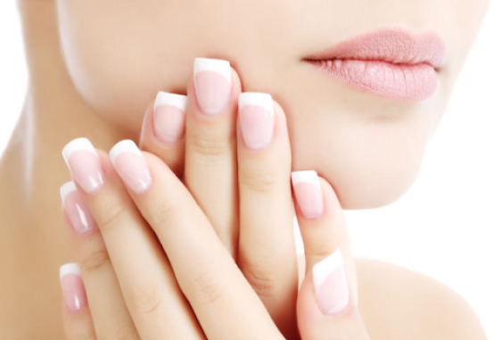
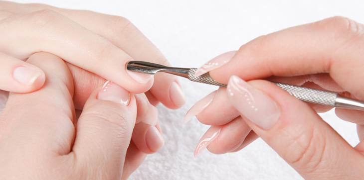

Espaço
Pinta de Onça
Redes Sociais
Como Deixar suas Unhas Bonitas
Quem não gostaria de ter unhas bonitas e bem cuidadas? Para isso, é necessário tomar alguns cuidados. Mesmo quem frequenta manicure enfrenta probleminhas como unha ressecada ou lascada, cutícula despelando e esmalte que descasca. Veja alguns cuidados para manter as unhas bonitas e saudáveis.
As unhas tem importância como órgão funcional e estético. A unha é formada basicamente de queratina, mas há também componentes como proteínas, enxofre e cálcio. Apresenta crescimento médio de 0,1 mm/dia nas mãos, sendo mais lento nos pés. Unhas em boas condições podem ser muito atraentes e refletem a saúde das mãos.
Cuidados com as unhas
- Mantenha a cutícula sempre hidratada. Para isso, esfolie semanalmente e hidrate diariamente.
- A cutícula não deve ser retirada por completo. Ela forma uma barreira protetora contra a invasão de microorganismos causadores de doenças. Comece aplicando um creme específico para amolecer cutículas e, em seguida, empurre-as. Com a própria espátula, retire somente o excesso de pele. O que sobrar, retire com o alicate, mas sem eliminar toda a cutícula.
- Para amolecer a cutícula, aplique um creme específico e coloque a mão de molho na água morna por cinco minutos. Depois, empurre com uma espátula e só se aventure com o alicate se tiver prática.
- Na hora de lixar, o formato oval é ideal para unhas fracas, porque quebra com menos facilidade. O quadrado exige movimentos firmes e retos da lixa. Unhas redondas devem ser lixadas na diagonal. Uma vez por mês, lixe também a superfície das unhas com a parte mais fina da lixa para retirar as impurezas e as células mortas. Limpe qualquer eventual sujeirinha e Use a lixa de polimento para dar brilho nas unhas.
- Mantenha todos os instrumentos (espátula e alicate) limpos e, se possível, desinfetados. Se você vai à manicure, verifique se ela desinfeta o material após utilizá-lo em cada cliente. Não tente reaproveitar esmaltes ressecados utilizando solventes, pois eles modificam sua composição química, comprometendo a qualidade do produto.
- Aplique base, mesmo se for usar esmalte por cima, senão a unha pode ficar amarelada. Limpe os excessos com palito próprio de manicure.
- Se a sua unha é fraca, use base fortalecedora e cremes específicos.
- Para tornar sua unha mais comprida, deixe uma faixa bem fininha sem pintar nas laterais. Mas o efeito tem de ser sutil, para não ficar com ar de desleixo.
- Para não ressecar as unhas, remova o esmalte com um produto que não contenha acetona na fórmula.
- Evite usar acetona. Esse tipo de produto, quando usado em excesso, resseca as unhas, que se tornam frágeis e quebradiças. Use removedores de esmalte sem acetona.
- Para o esmalte durar mais tempo, a dica é passar a ponta do dedo sobre a parte lixada da unha logo depois que ela for pintada. Isso ajuda a retirar o excesso de esmalte, o principal culpado pelas pontas das unhas descascarem rapidamente. O esmalte seca mais se você tirar limpar bem o pincel do esmalte ante de aplicá-lo. Depois disso mergulhe as mãos em um pote com água bem gelada ou use um óleo secante. Quando o esmalte começa a descascar, é hora de retirá-lo e aproveitar para caprichar na hidratação da área.